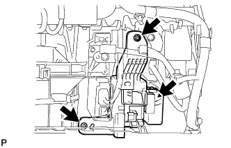
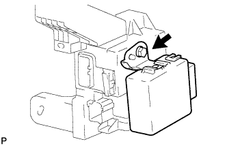

DOOR CONTROL RELAY (for LHD) > REMOVAL |
| 1. DISCONNECT CABLE FROM NEGATIVE BATTERY TERMINAL |
| 2. REMOVE INSTRUMENT SIDE PANEL RH (w/o Airbag Cut Off Switch) |
 |
Place protective tape as shown in the illustration.
Using a moulding remover, detach the 6 claws and remove the side panel.
| 3. REMOVE INSTRUMENT SIDE PANEL RH (w/ Airbag Cut Off Switch) |
 |
Place protective tape as shown in the illustration.
Using a moulding remover, detach the 6 claws.
Remove the side panel and disconnect the connector.
| 4. REMOVE NO. 2 INSTRUMENT PANEL UNDER COVER SUB-ASSEMBLY (w/ Floor Under Cover) |
 |
Detach the 4 claws and remove the under cover.
| 5. REMOVE FRONT DOOR SCUFF PLATE RH |
| 6. REMOVE FRONT PASSENGER SIDE KNEE AIRBAG ASSEMBLY (w/ Passenger Side Knee Airbag) |
 |
Remove the 4 bolts.
Detach the 4 claws and remove the front passenger side knee airbag.
Disconnect the connector.
| 7. REMOVE LOWER INSTRUMENT PANEL (w/o Passenger Side Knee Airbag) |
 |
Remove the 2 bolts.
Detach the 4 claws and remove the instrument panel.
| 8. REMOVE NO. 3 INSTRUMENT CLUSTER FINISH PANEL GARNISH |
 |
Place protective tape as shown in the illustration.
Using a moulding remover, detach the 6 claws and remove the panel garnish.
| 9. REMOVE INSTRUMENT PANEL BOX DOOR KNOB |
 |
Using a moulding remover, detach the 2 claws and remove the knob.
| 10. REMOVE LOWER NO. 2 INSTRUMENT PANEL FINISH PANEL |
 |
Remove the 4 bolts.
Detach the 3 claws.
Remove the finish panel and then disconnect the connector.
| 11. REMOVE COWL SIDE JUNCTION BLOCK RH |
 |
Remove the bolt and nut.
Disconnect the connector and remove the cowl side junction block RH.
| 12. REMOVE DOUBLE LOCK DOOR CONTROL RELAY ASSEMBLY |
 |
Remove the screw and double lock door control relay assembly.